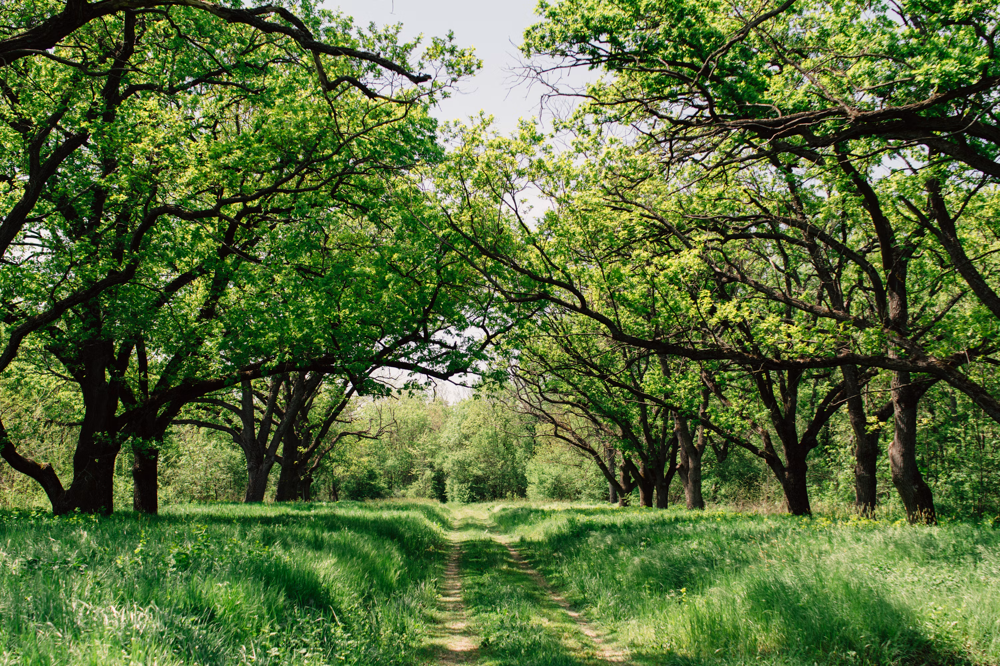
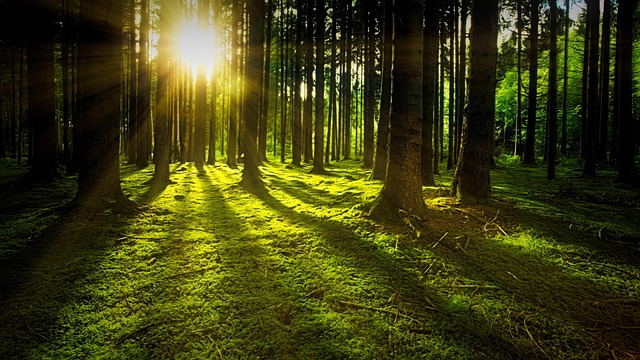
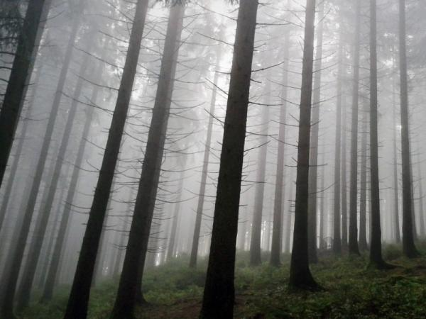

🌲 Bosques Verde vida
Los bosques son los pulmones verdes del planeta. Entre árboles altos y senderos cubiertos de hojas, uno encuentra una calma que es difícil de hallar en otro lugar.
Cada bosque es un ecosistema completo: los árboles dan sombra y alimento, los insectos polinizan, las aves anidan en las ramas y los hongos trabajan bajo el suelo para mantener todo en equilibrio.
Proteger los bosques significa proteger el aire que respiramos y el agua que bebemos. Plantar un árbol o simplemente respetar la naturaleza cuando la visitamos ya es una gran contribución.



Mi medidor de aventura 🏕️
Caminar entre árboles
Escuchar a las aves
Acampar bajo las estrellas